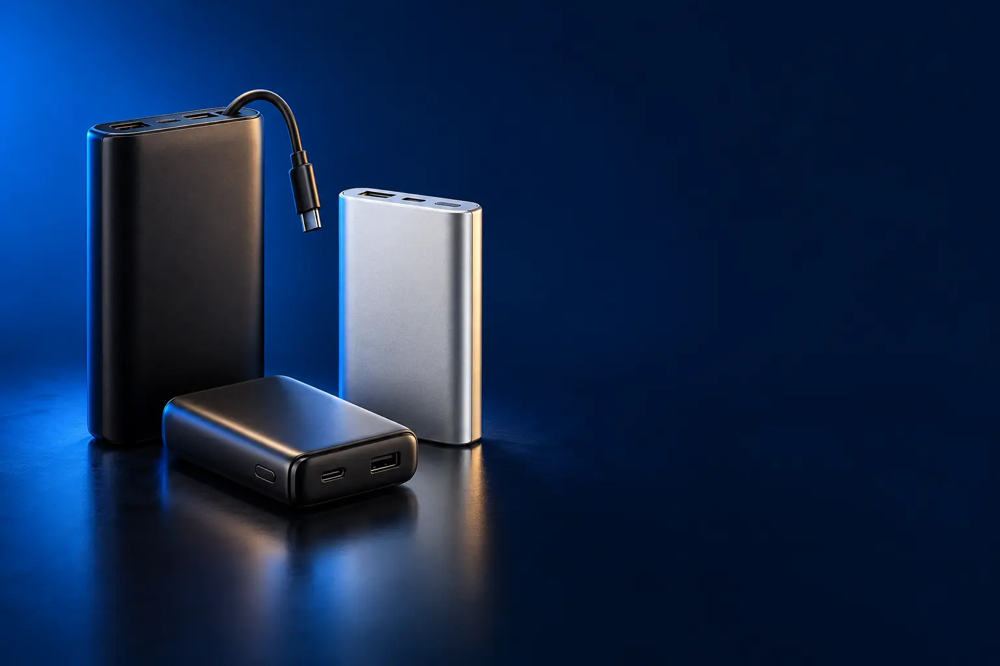

PARA O CELULAR
Melhor power bank custo-benefício para celular
Carga extra para o dia, na bolsa ou na mochila.

Melhor custo-benefício em power banki2GO PRO 20.000 mAh
CURADORIA TECHAPROVADO · 2026
Power bank é a bateria extra que salva o fim do dia. Separamos 10 modelos em 3 perfis e dizemos para quem cada um vale a pena.

NOSSA LEITURA
10.000 mAh dão cerca de 2 cargas de celular; 20.000 mAh, cerca de 4. Para carregar rápido, procure 20 W ou mais; para notebook, 65 W ou mais.
COMECE POR AQUI
PARA O CELULAR
Carga extra para o dia, na bolsa ou na mochila.
MAGNÉTICO (MAGSAFE)
Gruda atrás do iPhone e carrega sem fio.

PARA NOTEBOOK
Potência para carregar notebook, tablet e celular juntos.

A FICHA, TRADUZIDA
01 - CAPACIDADE
mAh é a quantidade de energia guardada. Na prática, um power bank entrega cerca de 60% a 70% do número da caixa, porque parte se perde em calor e conversão.
Um celular comum tem de 4.000 a 5.000 mAh: 10.000 mAh dão cerca de 2 cargas, 20.000 mAh dão cerca de 4.
Em avião, power banks de até 27.000 mAh (100 Wh) podem ir na bagagem de mão; nunca despache.
02 - POTÊNCIA
A potência em watts (W) define a velocidade. 10 W carrega devagar; 20 W já é carregamento rápido para iPhone; 25 W a 45 W para Android rápido; 65 W ou mais para notebook.
O celular só aceita a potência que suporta: um power bank de 45 W não estraga um celular de 20 W.
Use cabo de qualidade: cabo fraco limita a velocidade.
03 - MAGNÉTICO
Os magnéticos grudam atrás do iPhone (12 ou mais novo) e carregam sem fio. Também servem a outros celulares compatíveis com Qi, mas sem o ímã.
Sem fio é mais lento e esquenta mais que por cabo. Para carga rápida, use a porta USB-C do próprio power bank.
Capinhas grossas ou sem ímã atrapalham o encaixe: use capinha compatível com MagSafe.
04 - SEGURANÇA
Power banks de marca têm proteção contra superaquecimento, sobrecarga e curto. Genéricos sem marca podem ter capacidade menor que a anunciada.
Não deixe no sol, no carro fechado ou embaixo do travesseiro. Se estufar, pare de usar.
Prefira lojas oficiais ou a Amazon como vendedora.
A CURADORIA EM DETALHE
10 modelos da pesquisa
PERFIL · 4 MODELOS, DA ENTRADA AO TOP DE LINHA
Para o celular, um power bank de 10.000 a 20.000 mAh resolve: dá de 2 a 4 cargas completas. Vale procurar carregamento rápido (20 W ou mais) e, se possível, cabo integrado.
CELULAR · CUSTO-BENEFÍCIO 1 de 4
Melhor custo-benefício em power bank
20.000 mAh · Power Delivery 20 W · 3 portas
Ver preço na AmazonPOR DENTRO DA ESCOLHA
Power bank de 20.000 mAh com Power Delivery de 20 W, que carrega 50% da bateria do celular em 30 minutos, duas saídas USB e uma porta USB-C de entrada e saída.
Quase 12 mil avaliações e nota 4,7, pelo preço de um power bank genérico.
| Capacidade | 20.000 mAh |
|---|---|
| Potência | 20 W |
| Portas | 2 USB-A + 1 USB-C |
Fonte: ficha e descrição do anúncio, conferidas em 02/11/2026. Dados informados pelo fabricante. Nota e número de avaliações são de compradores, não teste do TechAprovado.

CELULAR · ALTERNATIVA 2 de 4
Outro caminho: o menor, que pluga direto
Conector USB-C dobrável embutido · 22,5 W
Ver preço na AmazonPOR DENTRO DA ESCOLHA
Power bank de bolso com conector USB-C dobrável embutido: pluga direto no celular, sem cabo. 5.000 mAh e carregamento de 22,5 W.
Não é o de mais carga, é o mais prático: cabe no bolso e não precisa de cabo.
| Capacidade | 5.000 mAh |
|---|---|
| Potência | 22,5 W |
| Conector | USB-C embutido |
Fonte: ficha e descrição do anúncio, conferidas em 02/11/2026. Dados informados pelo fabricante. Nota e número de avaliações são de compradores, não teste do TechAprovado.

CELULAR · INTERMEDIÁRIO 3 de 4
Cabo USB-C integrado · 30 W · compacto
Ver preço na AmazonPOR DENTRO DA ESCOLHA
Power bank de 10.000 mAh com carregamento de 30 W, cabo USB-C integrado de 13,7 cm que aguenta mais de 10 mil dobras e tamanho de 11 × 6,6 × 2,5 cm. Cerca de 2 cargas completas de iPhone.
Mais de 15 mil avaliações. O cabo integrado resolve o cabo esquecido em casa.
| Capacidade | 10.000 mAh |
|---|---|
| Potência | 30 W |
| Cabo | USB-C integrado |
Fonte: ficha e descrição do anúncio, conferidas em 02/11/2026. Dados informados pelo fabricante. Nota e número de avaliações são de compradores, não teste do TechAprovado.

CELULAR · TOP DE LINHA 4 de 4
Top de linha para celular
45 W · cabos Lightning e USB-C embutidos
Ver preço na AmazonPOR DENTRO DA ESCOLHA
20.000 mAh (cerca de 4 cargas de iPhone), carregamento turbo de 45 W e dois cabos embutidos: Lightning com certificação MFi e USB-C.
Os dois cabos embutidos servem a qualquer celular da casa.
| Capacidade | 20.000 mAh |
|---|---|
| Potência | 45 W |
| Cabos | Lightning e USB-C embutidos |
Fonte: ficha e descrição do anúncio, conferidas em 02/11/2026. Dados informados pelo fabricante. Nota e número de avaliações são de compradores, não teste do TechAprovado.
PERFIL · 3 MODELOS, DA ENTRADA AO TOP DE LINHA
Os power banks magnéticos grudam atrás do iPhone (12 ou mais novo) e carregam sem fio, sem cabo pendurado. Também carregam outros celulares por cabo ou sem fio, se forem compatíveis com Qi.
MAGNÉTICO · CUSTO-BENEFÍCIO 1 de 3
Melhor custo-benefício magnético
Magnético · sem fio Qi · USB-C PD 20 W
Ver preço na AmazonPOR DENTRO DA ESCOLHA
Power bank magnético compatível com MagSafe (iPhone 12 ao 15, segundo o anúncio) com três modos: sem fio Qi, USB-C Power Delivery de 20 W e USB-A de 18 W.
Marca nacional, mais de 4,7 mil avaliações e três formas de carregar.
| Capacidade | 10.000 mAh |
|---|---|
| Sem fio | Qi magnético |
| Cabo | USB-C 20 W, USB-A 18 W |
Fonte: ficha e descrição do anúncio, conferidas em 02/11/2026. Dados informados pelo fabricante. Nota e número de avaliações são de compradores, não teste do TechAprovado.

MAGNÉTICO · INTERMEDIÁRIO 2 de 3
Ultrafino de 1,27 cm · suporte dobrável
Ver preço na AmazonPOR DENTRO DA ESCOLHA
Power bank magnético ultrafino (1,27 cm), com alinhamento magnético para iPhone 13 ao 17, segundo o anúncio, e tecnologia de células compactas.
Mais de 11 mil avaliações e o design mais fino da lista.
| Espessura | 1,27 cm |
|---|---|
| Sem fio | Magnético |
| Compatível | iPhone 13 ao 17 |
Fonte: ficha e descrição do anúncio, conferidas em 02/11/2026. Dados informados pelo fabricante. Nota e número de avaliações são de compradores, não teste do TechAprovado.

MAGNÉTICO · TOP DE LINHA 3 de 3
Top de linha magnético
Sem fio magnético 15 W · controle de temperatura
Ver preço na AmazonPOR DENTRO DA ESCOLHA
Painel magnético sem fio de até 15 W (o dobro da maioria), porta USB-C, 10.000 mAh em 1,47 × 7,06 × 10,4 cm e controle avançado de temperatura.
Os 15 W sem fio fazem diferença real no tempo de carga.
| Capacidade | 10.000 mAh |
|---|---|
| Sem fio | Até 15 W magnético |
| Extras | Controle de temperatura |
Fonte: ficha e descrição do anúncio, conferidas em 02/11/2026. Dados informados pelo fabricante. Nota e número de avaliações são de compradores, não teste do TechAprovado.
PERFIL · 3 MODELOS, DA ENTRADA AO TOP DE LINHA
Para carregar notebook, o power bank precisa de saída USB-C com 65 W ou mais e bateria de 20.000 mAh ou mais. Confira se o seu notebook carrega pela porta USB-C.
NOTEBOOK · CUSTO-BENEFÍCIO 1 de 3
Melhor custo-benefício para notebook
87 W em 3 portas · até 65 W em um aparelho · cabo integrado
Ver preço na AmazonPOR DENTRO DA ESCOLHA
Power bank de 20.000 mAh que distribui 87 W entre três aparelhos, com até 65 W em um só, e cabo USB-C integrado.
Mais de 10 mil avaliações. É o power bank de notebook mais escolhido.
| Capacidade | 20.000 mAh |
|---|---|
| Potência | 87 W total, 65 W máx. |
| Cabo | USB-C integrado |
Fonte: ficha e descrição do anúncio, conferidas em 02/11/2026. Dados informados pelo fabricante. Nota e número de avaliações são de compradores, não teste do TechAprovado.

NOTEBOOK · AVANÇADO 2 de 3
145 W · 3 USB-C · display digital
Ver preço na AmazonPOR DENTRO DA ESCOLHA
Power bank de 25.000 mAh e 145 W com PD 3.0, três portas USB-C e display digital com o nível de carga, compatível com MacBook Pro, Dell XPS, Steam Deck e celulares.
A potência mais alta da lista, para notebooks que pedem 100 W.
| Capacidade | 25.000 mAh |
|---|---|
| Potência | 145 W |
| Extras | Display digital |
Fonte: ficha e descrição do anúncio, conferidas em 02/11/2026. Dados informados pelo fabricante. Nota e número de avaliações são de compradores, não teste do TechAprovado.

NOTEBOOK · TOP DE LINHA 3 de 3
Top de linha para notebook
3 USB-C de 100 W · 2 cabos embutidos · 4 aparelhos
Ver preço na AmazonPOR DENTRO DA ESCOLHA
25.000 mAh com portas USB-C de 100 W, dois cabos USB-C embutidos (um retrátil de 0,7 m que aguenta 20 mil retrações) e carga de até 4 aparelhos ao mesmo tempo.
Quase 13 mil avaliações. Os cabos embutidos dispensam carregar qualquer outro.
| Capacidade | 25.000 mAh |
|---|---|
| Potência | 100 W por USB-C |
| Cabos | 2 USB-C embutidos |
Fonte: ficha e descrição do anúncio, conferidas em 02/11/2026. Dados informados pelo fabricante. Nota e número de avaliações são de compradores, não teste do TechAprovado.
Nenhum modelo encontrado. Tente outro termo ou volte para Todos.
LADO A LADO
| Modelo | Perfil | Posição | Capacidade | Destaque | Nota (avaliações) |
|---|---|---|---|---|---|
| i2GO PRO 20.000 mAh | Celular | Custo-benefício | 20.000 mAh | 20.000 mAh · Power Delivery 20 W · 3 portas | 4,7 (11,8 mil) |
| Anker Nano 5.000 mAh | Celular | Alternativa | 5.000 mAh | Conector USB-C dobrável embutido · 22,5 W | 4,4 (13,7 mil) |
| Anker 10.000 mAh 30 W | Celular | Intermediário | 10.000 mAh | Cabo USB-C integrado · 30 W · compacto | 4,6 (15,4 mil) |
| Anker Zolo 20.000 mAh 45 W | Celular | Top de linha | 20.000 mAh | 45 W · cabos Lightning e USB-C embutidos | 4,6 (2 mil) |
| Geonav PB10MAG 10.000 mAh | Magnético | Custo-benefício | 10.000 mAh | Magnético · sem fio Qi · USB-C PD 20 W | 4,5 (4,7 mil) |
| Anker 622 MagSafe | Magnético | Intermediário | Ultrafino de 1,27 cm · suporte dobrável | 4,3 (11,9 mil) | |
| Anker MagGo 10.000 mAh | Magnético | Top de linha | 10.000 mAh | Sem fio magnético 15 W · controle de temperatura | 4,5 (10,1 mil) |
| Anker 20.000 mAh 87 W | Notebook | Custo-benefício | 20.000 mAh | 87 W em 3 portas · até 65 W em um aparelho · cabo integrado | 4,6 (10,5 mil) |
| UGREEN Nexode 25.000 mAh 145 W | Notebook | Avançado | 25.000 mAh | 145 W · 3 USB-C · display digital | 4,5 (8,1 mil) |
| Anker Laptop Power Bank 25.000 mAh | Notebook | Top de linha | 25.000 mAh | 3 USB-C de 100 W · 2 cabos embutidos · 4 aparelhos | 4,6 (12,9 mil) |
CONSIDERAÇÕES FINAIS
Power banks genéricos sem marca ficaram de fora mesmo com nota alta: a capacidade real costuma ser menor que a anunciada.
O i2GO PRO 20.000 mAh para celular, e o Anker 20.000 mAh 87 W para notebook.
10.000 mAh para cerca de 2 cargas; 20.000 mAh para cerca de 4.
Não. O celular controla a carga; use power bank de marca e cabo de qualidade.
Sim, na bagagem de mão, até 100 Wh (cerca de 27.000 mAh).
Porque ele muda várias vezes por dia. O botão leva ao valor atualizado na loja.
TRANSPARÊNCIA EDITORIAL
Separamos os power banks pelo que eles carregam e montamos uma escada de preço em cada perfil. Cada modelo precisa responder com clareza "para quem ele é o certo".
Em cada perfil há modelos em faixas de preço diferentes, e cada degrau precisa entregar algo que o anterior não entrega. Dois modelos com a mesma proposta não entram juntos.
Ficha, nota e número de avaliações foram conferidos nos anúncios das lojas em 02/11/2026. As avaliações são de compradores, não teste nosso.
Os links de compra desta página são de afiliado: se você comprar por eles, o TechAprovado pode ganhar uma comissão, sem custo adicional para você. Isso não muda a ordem nem a escolha dos produtos.
📲 GUIAS E DICAS NO SEU FEED
Dicas práticas antes de comprar, em carrosséis e vídeos curtos, sempre com link para o guia completo.